2 Welcome
It’s a vast world out there. We’re going to cover a lot of ground. Don’t be scared. It’s going to be so. much. FUN!
I’m just playing right now and specifically thinking about code styling. So here’s a code chunk for producing a very basic plot.
# load the libraries
library(tidyverse)
# create a plot
ggplot(mpg, aes(displ, cty)) +
geom_point(color = "#B3E5D9") +
geom_smooth(color = "#7EC1E7",
fill = "#C7E4F5") +
theme_minimal(15)
We could of course create some summary data too.
# create some summary data
mpg %>%
group_by(cyl) %>%
summarize(mean_cty = mean(cty),
sd_cty = sd(cty))## # A tibble: 4 x 3
## cyl mean_cty sd_cty
## <int> <dbl> <dbl>
## 1 4 21.01235 3.498192
## 2 5 20.5 0.5773503
## 3 6 16.21519 1.773530
## 4 8 12.57143 1.806361But the above doesn’t give us an example of a string, which we’ll also use a lot, so let’s try an example with that.
## # A tibble: 18 x 11
## manufacturer model displ year cyl trans drv cty hwy fl
## <chr> <chr> <dbl> <int> <int> <chr> <chr> <int> <int> <chr>
## 1 audi a4 1.8 1999 4 auto(l5) f 18 29 p
## 2 audi a4 1.8 1999 4 manual(m5) f 21 29 p
## 3 audi a4 2 2008 4 manual(m6) f 20 31 p
## 4 audi a4 2 2008 4 auto(av) f 21 30 p
## 5 audi a4 2.8 1999 6 auto(l5) f 16 26 p
## 6 audi a4 2.8 1999 6 manual(m5) f 18 26 p
## 7 audi a4 3.1 2008 6 auto(av) f 18 27 p
## 8 audi a4 quattro 1.8 1999 4 manual(m5) 4 18 26 p
## 9 audi a4 quattro 1.8 1999 4 auto(l5) 4 16 25 p
## 10 audi a4 quattro 2 2008 4 manual(m6) 4 20 28 p
## 11 audi a4 quattro 2 2008 4 auto(s6) 4 19 27 p
## 12 audi a4 quattro 2.8 1999 6 auto(l5) 4 15 25 p
## 13 audi a4 quattro 2.8 1999 6 manual(m5) 4 17 25 p
## 14 audi a4 quattro 3.1 2008 6 auto(s6) 4 17 25 p
## 15 audi a4 quattro 3.1 2008 6 manual(m6) 4 15 25 p
## 16 audi a6 quattro 2.8 1999 6 auto(l5) 4 15 24 p
## 17 audi a6 quattro 3.1 2008 6 auto(s6) 4 17 25 p
## 18 audi a6 quattro 4.2 2008 8 auto(s6) 4 16 23 p
## # … with 1 more variable: class <chr>Finally, let’s write a quick function that has a logical in it (since we haven’t tested those yet).
## [1] 23.44017And overall, I’m pretty happy with how that’s all looking.